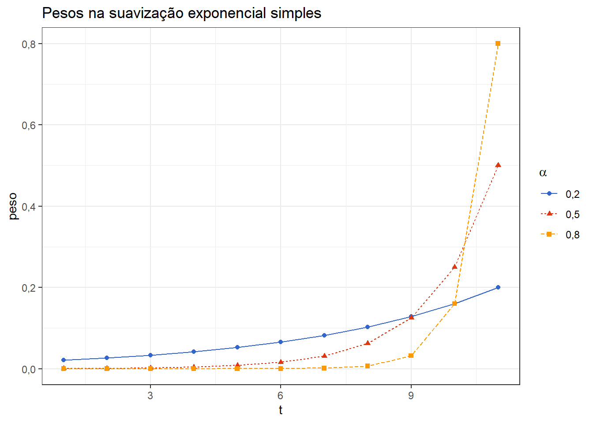
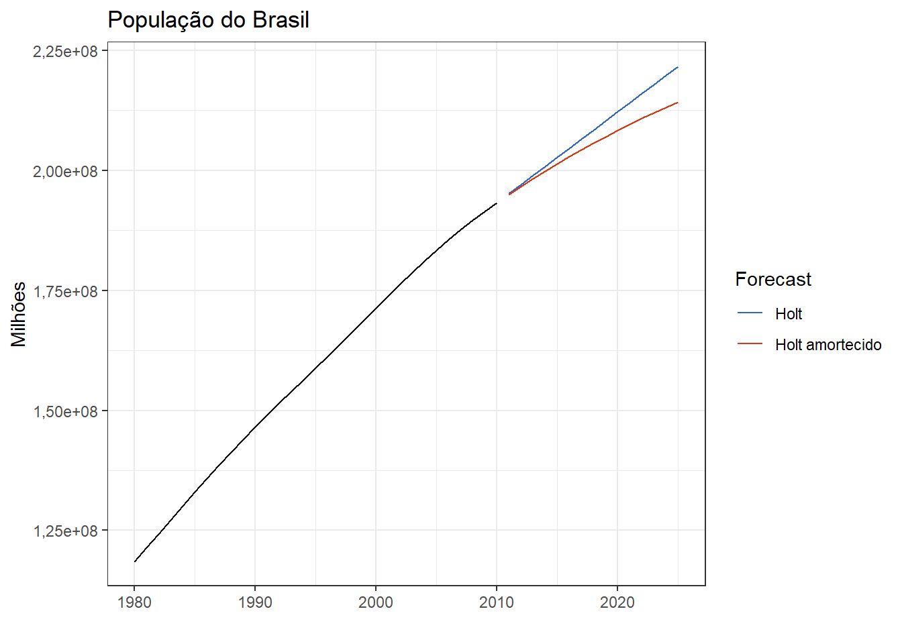
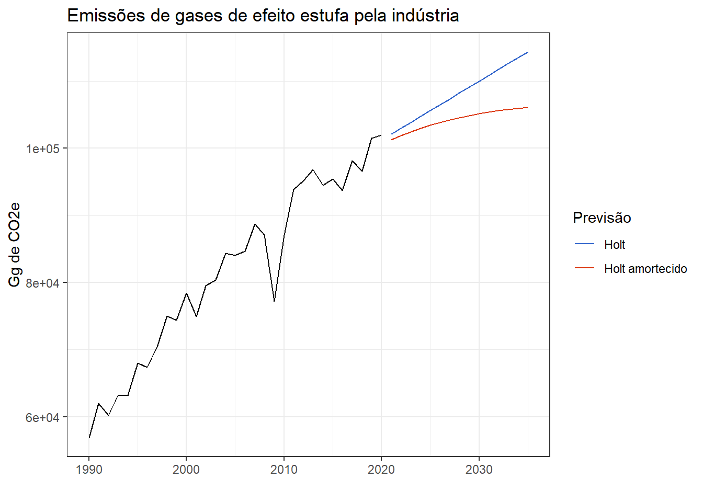
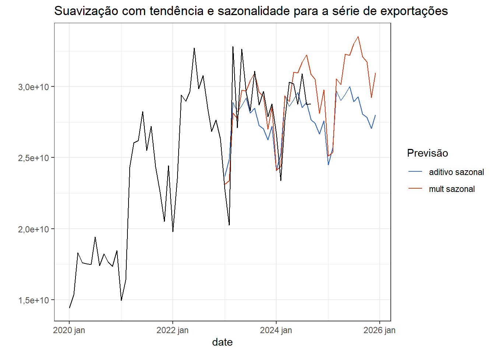
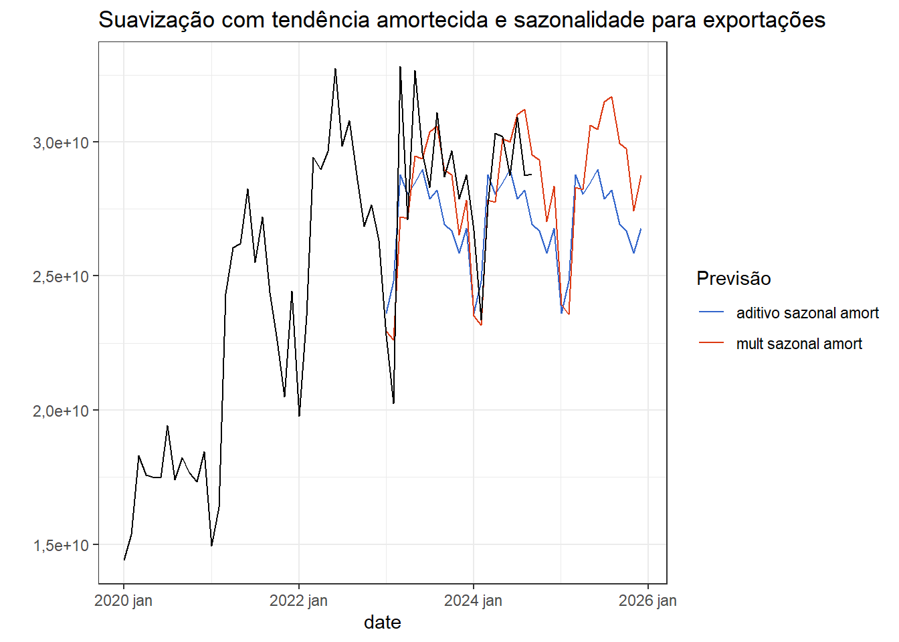
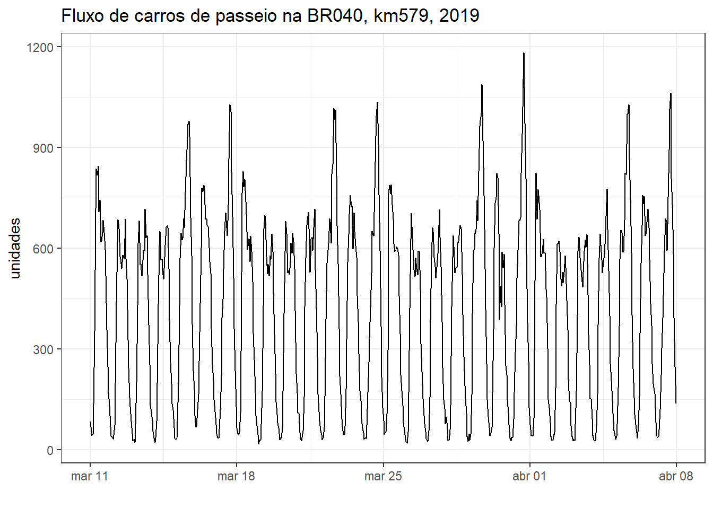

5 Suavização exponencial
5.1 Suavização exponencial simples
A suavização exponencial consiste em uma média ponderada das observações anteriores, com peso decaindo exponencialmente à medida que as observações ficam mais distantes no tempo.
O caso simples pode ser descrito matematicamente conforme segue:
\[ \hat y_{T+1|T} = \alpha y_T + \alpha(1-\alpha)y_{T-1} + \alpha(1-\alpha)^2y_{T-2}+... \]
onde \(0< \alpha <1\) consiste no parâmetro de suavização. A previsão um passo à frente consiste em uma média ponderada das observações anteriores, \(y_1,...,y_T\), com taxa de decrescimento dos pesos controlada pelo parâmetro \(\alpha\). A Tabela 5.1 expõe os pesos para cinco últimas observações da série para distintos valores de \(\alpha\). Observa-se que a soma dos pesos é próxima de 1.
| Observação | \(\alpha=0.2\) | \(\alpha=0.5\) | \(\alpha=0.8\) |
|---|---|---|---|
| \(y_T\) | 0.200000 | 0.500000 | 0.800000 |
| \(y_T-1\) | 0.160000 | 0.250000 | 0.160000 |
| \(y_T-2\) | 0.128000 | 0.125000 | 0.032000 |
| \(y_T-3\) | 0.102400 | 0.062500 | 0.006400 |
| \(y_T-4\) | 0.081920 | 0.031250 | 0.001280 |
| \(y_T-5\) | 0.065536 | 0.015625 | 0.000256 |
A Figura 5.1 expõe os mesmos pesos plotados segundo o tempo. Observa-se que quanto maior o \(\alpha\), maior a taxa de decrescimento dos pesos da última observação em relação às anteriores.
O modelo exposto para prever a observação futura pode ser descrito sempre considerando a última observação e a previsão desta:
\[ \hat y_{T+1|T} = \alpha y_T +(1-\alpha)\hat y_{T|T-1} \]
De forma similar os valores estimados para a série ficam:
\[ \hat y_{t+1|t} = \alpha y_t +(1-\alpha)\hat y_{t|t-1}, \]
para \(t=1,...,T\).
Seja \(l_0\) o valor estimado para a primeira observação, \(t=1\), então:
\[ \begin{align} \hat y_{2|1} &= \alpha y_1 +(1-\alpha) l_0 \\ \hat y_{3|2} &= \alpha y_2 +(1-\alpha) \hat y_{2|1} \\ \hat y_{4|3} &= \alpha y_3 +(1-\alpha) \hat y_{3|2} \\ \vdots \\ \hat y_{T|T-1} &= \alpha y_{T-1} +(1-\alpha) \hat y_{T-1|T-2} \\ \hat y_{T+1|T} &= \alpha y_{T} +(1-\alpha) \hat y_{T|T-1} \\ \end{align} \]
Observe que cada equação pode ser substituída na posterior:
\[ \begin{align} \hat y_{3|2} &= \alpha y_2 +(1-\alpha) [\alpha y_1 +(1-\alpha) l_0] \\ &= \alpha y_2 + \alpha(1-\alpha)y_1 +(1-\alpha)^2 l_0\\ \hat y_{4|3} &= \alpha y_3 +(1-\alpha)[\alpha y_2 + \alpha(1-\alpha y_1 +(1-\alpha)^2 l_0] \\ &= \alpha y_3 +\alpha(1-\alpha) y_2 +\alpha(1-\alpha)^2 y_1 +(1-\alpha)^3 l_0 \\ \vdots \\ \hat y_{T+1|T} &= \sum_{j=0}^{T-1} \alpha (1-\alpha)^j y_{T-j}+ (1-\alpha)^T l_0 \\ \end{align} \]
Como o último termo fica muito pequeno para \(T\) grande, então a equação fica conforme o modelo apresentado inicialmente.
A representação em componentes também é comum para a suavização exponencial, sendo o caso simples conforme segue:
\[ \begin{align} \text{Equação de previsão: } \hat y_{t+h} &= l_t\\ \text{Equação de suavização: } l_t &= \alpha y_t + (1-\alpha)l_{t-1},\\ \end{align} \]
onde \(l_t\) consiste no nível no período \(t\) e \(\hat y_{t+h} = l_t\) a previsão no período \(t+h\).
Se \(h=1\), tem-se o valor estimado, enquanto se \(t=T\), tem-se a previsão para além dos dados de treino. Fazendo \(l_t = \hat y_{t+1|t}\) e \(l_{t-1} = \hat y_{t|t-1}\), tem-se o modelo ponderado já exposto. Tal representação não é tão útil para o caso simples, porém, quando considerados termos de tendência e suavização, será. O modelo simples, até aqui explicitado é recomendado para casos sem tendência e sazonalidade.
A Figura 5.2 expõe o resultado da suavização exponencial simples para a série do IPCA no Brasil a partir de 2019. Os parâmetros estimados \(\alpha\) e \(l_0\) expostos na Tabela 5.2 foram estimados minimizando a soma dos quadrados dos erros para as estimativas um passo à frente.
| term | estimate |
|---|---|
| alpha | 0.6373463 |
| l[0] | 0.3856718 |

A Tabela 5.3 apresenta os valores estimados \(\hat y_t\) para as últimas observações da série.
| index | value | .fitted |
|---|---|---|
| 2024 Apr | 0.38 | 0.3506233 |
| 2024 May | 0.46 | 0.3693464 |
| 2024 Jun | 0.21 | 0.4271242 |
| 2024 Jul | 0.38 | 0.2887409 |
| 2024 Aug | -0.02 | 0.3469045 |
| 2024 Sep | 0.44 | 0.1130593 |
5.2 Suavização exponencial com tendência
Em casos com tendência pode-se considerar o método de Holt (2004), o qual considera uma equação para o nível, \(l_t\), uma para a tendência, \(b_t\), e a de previsão, \(\hat y_{t+h|t}\).
\[ \begin{align} \text{Equação de previsão: } \hat y_{t+h} &= l_t + hb_t\\ \text{Equação do nível: } l_t &= \alpha y_t + (1-\alpha)(l_{t-1}+b_{t-1})\\ \text{Equação de tendência: } b_t &= \beta^*(l_t-l_{t-1})+(1-\beta^*)b_{t-1} \end{align} \]
Neste caso \(l_t\) é uma média ponderada da observação \(y_t\) e da previsão um passo a frente, dada por \(l_{t-1}+b_{t-1}\). A equação de tendência mostra que \(b_t\) é uma média ponderada da tendência no tempo \(t\), baseada em \(l_t-l_{t-1}\), e na estimativa anterior da tendência, \(b_{t-1}\).
A Figura 5.3 expõe a série anual da população projetada para o Brasil até 2010, revisada em 2008, disponível em IBGE. Observa-se tendência de crescimento muito próxima de linear.
A Tabela 5.4 expõe os parâmetros estimados de suavização exponencial com tendência para a série da populaçao projetada do Brasil.
| .model | term | estimate |
|---|---|---|
| AAN | alpha | 9.953798e-01 |
| AAN | beta | 4.433299e-01 |
| AAN | l[0] | 1.169488e+08 |
| AAN | b[0] | 2.842713e+06 |
5.2.1 Suavização exponencial com tendência amortecida
Um problema do método de Holt (2004) para suavização exponencial com tendência é que ele costuma apresentar uma estimativa linear que em longos horizontes de previsão costuma não se confirmar. Uma opção é a abordagem de Gardner e Mckenzie (1985) que propõe amortecer as previsões. O método inclui o parâmetro de amortecimento \(0<\phi<1\).
\[ \begin{align} \text{Equação de previsão: } \hat y_{t+h} &= l_t + (\phi+\phi^2+...+\phi^h)b_t\\ \text{Equação do nível: } l_t &= \alpha y_t + (1-\alpha)(l_{t-1}+\phi b_{t-1})\\ \text{Equação de tendência: } b_t &= \beta^*(l_t-l_{t-1})+(1-\beta^*)\phi b_{t-1} \end{align} \]
Caso \(\phi=1\), então tem-se o método de Holt já exposto. O método tende a gerar previsões com tendência para curtos períodos e previsões constantes em longos horizontes à frente das observações. A Figura 5.4 expõe as previsões 15 anos à frente para a população do Brasil considerando os dados projetados até 2010. Observa-se que o método de Holt projetaria 212 milhões de pessoas em 2020, enquanto o mesmo amortecido projetaria 204 milhões para o mesmo ano. Foi considerado neste caso \(\phi=0.9\). Dados já observados do censo de 2022 indicam que a população do Brasil neste ano atingiu 203 milhões de pessoas.

A Figura 5.5 expõe os mesmos métodos aplicados à série anual de emissão de gases de efeito estufa pela indústria, disponível em Sistema de Estimativa de Emissão de Gases. Foi considerado um \(\phi = 0.95\) para o caso com amortecimento.

5.3 Suavização exponencial com sazonalidade
Holt (2004) e Winters (1960) consideraram a sazonalidade na suavização exponencial. Logo, além das equações de previsão, nível e tendência, o método inclui uma equação adicional para a sazonalidade. O método considera ambos os casos aditivo e multiplicativo.
O método Holt-Winter aditivo compreende as equações à seguir:
\[ \begin{align} \text{Equação de previsão: } \hat y_{t+h} &= l_t + hb_t + s_{t+h-m(k+1)}\\ \text{Equação do nível: } l_t &= \alpha (y_t-s_{t-m}) + (1-\alpha)(l_{t-1}+b_{t-1})\\ \text{Equação de tendência: } b_t &= \beta^*(l_t-l_{t-1})+(1-\beta^*)b_{t-1}\\ \text{Equação de sazonalidade: } s_t &= \gamma(y_t-l_{t-1}-b_{t-1})+(1-\gamma)s_{t-1}, \end{align} \]
onde \(k\) consiste na parte inteira de \((h−1)/m\) que garante que a estimativa dos índices sazonais usados para previsão vêm do último período sazonal da série. A equação de nível consiste em uma média ponderada entre a observação ajustada sazonalmente, \(y_t-s_{t-m}\), e a previsão não sazonal, \(l_{t-1}+b_{t-1}\), para o tempo \(t\). A equação de tendência não muda e a sazonal considera uma média móvel do índice sazonal atual, \(y_t-l_{t-1}-b_{t-1}\), e do mesmo período da estação anterior, \(s_{t-1}\).
O caso multiplicativo é exposto à seguir.
\[ \begin{align} \text{Equação de previsão: } \hat y_{t+h} &= (l_t + hb_t) s_{t+h-m(k+1)}\\ \text{Equação do nível: } l_t &= \alpha \frac{y_t}{s_{t-m}} + (1-\alpha)(l_{t-1}+b_{t-1})\\ \text{Equação de tendência: } b_t &= \beta^*(l_t-l_{t-1})+(1-\beta^*)b_{t-1}\\ \text{Equação de sazonalidade: } s_t &= \gamma \frac {y_t}{(l_{t-1}-b_{t-1})}+(1-\gamma)s_{t-1}, \end{align} \]
A Figura 5.6 plota a série temporal de exportações do Brasil em US$ FOB, disponível em Resultados do Comércio Exterior Brasileiro - Dados Consolidados. Observa-se em geral tendência de crescimento com estagnação de 2016 a 2021 devido a crise político-econômica e a pandemia.

A Figura 5.7 expõe o gráfico sazonal da mesma série. O padrão cíclico não é tão claro, mas nota-se maior volume de exportações de março a agosto.

A Figura 5.8 expõe modelos de suavização exponencial com tendência e sazonalidade para a série de exportações do Brasil. Os modelos foram estimados considerando dados de até 2022, sendo as previsões plotadas 3 anos à frente. O resultado foi plotado a partir de 2020, para melhor visualização.

5.3.1 Suavização exponencial com tendência amortecida e sazonalidade
O método de Holt-Winter também pode considerar o amortecimento. O caso multiplicativo geralmente fornece bons resultados, sendo descrito conforme segue.
\[ \begin{align} \text{Equação de previsão: } \hat y_{t+h} &= [l_t + (\phi+\phi^2+...+\phi^h)b_t] s_{t+h-m(k+1)}\\ \text{Equação do nível: } l_t &= \alpha \frac{y_t}{s_{t-m}} + (1-\alpha)(l_{t-1}+b_{t-1})\\ \text{Equação de tendência: } b_t &= \beta^*(l_t-l_{t-1})+(1-\beta^*)b_{t-1}\\ \text{Equação de sazonalidade: } s_t &= \gamma \frac {y_t}{(l_{t-1}-\phi b_{t-1})}+(1-\gamma)s_{t-1}, \end{align} \]
A Figura 5.9 expõe modelos de suavização exponencial com tendência amortecida e sazonalidade para a série de exportações do Brasil. O caso multiplicativo parece uma opção interessante com boa adequação aos períodos disponíveis, fazendo uma projeção à frente mais conservadora em comparação ao sem amortecimento.

5.4 Modelos de ETS e definição de espaço de estados
Os modelos de suavização exponencial podem ser concebidos como modelos de espaço de estados, com uma equação de medição que descreve os dados observados e outras de estados, por exemplo as de nível, tendência e sazonalidade, que descrevem como os componentes ou estados mudam no horizonte de tempo. Outro aspecto importante ainda não abordado é que além de considerar o erro aditivo há a possibilidade de considerar o erro multiplicativo nos modelos de suavização exponencial.
Os modelos de suavização exponencial são geralmente denotados por ETS(.,.,.) para descrever as três componentes (erro, tendência, suavização). O erro pode ser aditivo ou multiplicativo, E={A,M}. A tendência pode ser não considerada (N), aditiva (A) ou atitiva amortecida (damped) (Ad), T ={N,A,Ad}. Por fim, a sazonalidade pode ser não considerada, aditiva ou multiplicativa, S={N,A,M}. Logo, há 18 modelos possíveis.
Retomando a suavização exponencial simples representada em componentes:
\[ \begin{align} \text{Equação de previsão: } \hat y_{t+h} &= l_t\\ \text{Equação de suavização: } l_t &= \alpha y_t + (1-\alpha)l_{t-1}.\\ \end{align} \]
Manipulando a Equação de suavização, tem-se:
\[ \begin{align} l_t &= l_{t-1} + \alpha(y_t-l_{t-1}) \\ &= l_{t-1} + \alpha e_t, \end{align} \]
onde \(e_t=y_t-l_{t-1}=y_t - \hat{y}_{t|t-1}\) é o resíduo no tempo \(t\). Pode-se, portanto, considerar que a observação de treino é igual ao nível anterior mais o erro, \(y_t=l_{t-1}+e_t\). Logo, deve-se assumir os resíduos como ruído branco, \(e_t = \varepsilon_t \sim NID(0,\sigma_\varepsilon^2)\) ou normalmente e identicamente distribuídos.
Quando o erro é multiplicativo no caso simples tem-se \(e_t=(y_t - \hat{y}_{t|t-1})/\hat{y}_{t|t-1}\).
A título de exemplo serão apresentados os modelos Holt-Winters aditivos com erro aditivo ETS(A,A,A) e multiplicativo ETS(M,A,A).
5.4.1 Modelo de Holt-Winter aditivo, ETS(A,A,A)
Para este caso, considerando o erro igual a \(\varepsilon_t =y_t - l_{t-1} + b_{t-1} + s_{t-m}\), tem-se o modelo a seguir:
\[ \begin{align} y_t &= l_{t-1} + b_{t-1} + s_{t-m} + \varepsilon_t\\ l_t &= l_{t-1}+b_{t-1}+ \alpha \varepsilon_t\\ b_t &=b_{t-1} + \beta\varepsilon_t \\ s_t &= s_{t-m} + \gamma\varepsilon_t, \\ \end{align} \]
onde \(\beta=\beta^*\alpha\).
5.4.2 Modelo de Holt-Winter multiplicativo, ETS(M,A,A)
Para o caso com erro multiplicativo o erro com tendência e sazonalidade aditiva, o erro é calculado conforme segue:
\[ e_t= \frac{y_t - (l_{t-1} + b_{t-1} + s_{t-m})}{(l_{t-1} + b_{t-1} + s_{t-m} )} \]
O modelo fica conforme segue:
\[ \begin{align} y_t &= (l_{t-1} + b_{t-1} + s_{t-m} ) (1+\varepsilon_t)\\ l_t &= l_{t-1}+b_{t-1}+ \alpha (l_{t-1}-b_{t-1}-s_{t-m})\varepsilon_t\\ b_t &=b_{t-1} + \beta(l_{t-1} + b_{t-1} + s_{t-m} ) \varepsilon_t \\ s_t &= s_{t-m} + \gamma(l_{t-1} + b_{t-1} + s_{t-m} ) \varepsilon_t\\ \end{align} \] Aqui foram apresentados apenas alguns modelos, sendo dois deles explicitados em notação de espaço de estados. RJ Hyndman e Athanasopoulos (2021) explicitam todos os 18 modelos possíveis de suavização exponencial com a notação de estado de espaços.
5.5 Previsão e intervalo de confiança com ETS
A previsão com modelos de ETS pode ser realizada iterando as equações à frente, \(t=T+1, ..., T+h\). Por exemplo, para o modelo ETS(M,A,A) a previsão para o primeiro período não disponível seria \(\hat y_T+1 = l_{T} + b_{T} + s_{T}\).
O intervalo de confiança pode ser calculado conforme já exposto anteriormente, \(\hat{y}_{T+h|T} \pm1,96 \hat\sigma_h\), com 1,96 sendo o valor do quantil da distribuição \(z\) para 0,95 de confiança. O desvio-padrão depende do método ETS usado e a estimativa é bastante complexa. Rob Hyndman et al. (2008) fornece os cálculos detalhados.
A Figura 5.10 apresenta o fluxo de veículos no kilômetro 579 da BR040 em Minas Gerais de 01/03 a 07/04/2019, considerando os dois sentidos de circulação. A série está disponível em DNIT. Observa-se uma sazonalidade semanal e diária na série, com fluxo distinto nos dias 3 e 4 de março devido ao carnaval.

A Figura 5.11 plota a série apenas para os carros de passeio a partir de 11 de março, primeira semana após a do carnaval de 2019. Observa-se regularidade no fluxo e pico nas sextas e domingos.

A Figura 5.12 expõe o gráfico sazonal da série anterior considerando a semana como período sazonal. Enfatiza-se a regularidade entre as 4 semanas disponíveis e observa-se novamente o pico de fluxo nas sextas e domingos devido idas e retornos de fins de semana.
A Figura 5.13 expõe o gráfico sazonal diário do fluxo de veículos na via e kilômetro considerados. Observa-se fluxo mínimo de 0 às 4h da manhã e máximo de 7 às 17h na maior parte dos dias. Nas segundas-feiras observa-se um fluxo maior a partir das 6 da manhã. Nas sextas e domingos observa-se um fluxo maior entre as 12 e 18h.

A Figura 5.14 expõe o resultado do modelo de suavização exponencial com tendência amortecida e sazonalidade. Foram considerados os dias de março para estimativa e a série completa é plotada juntamente com a previsão para a primeira semana de abril. Será importante avaliar posteriormente métodos que capturem variações sazonais distintas.